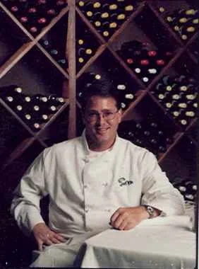
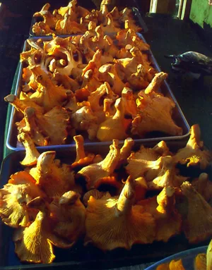

About our Chef
Richard Perry: Executive Chef, caterer, teacher and food historian.
Richard Perry, now living in Floyd, VA, has cooked in some great towns like Charleston SC, New Orleans, Austin TX, Naples and Key West, Florida, as well as the Virgin Islands and the French Antilles. He holds several degrees in Culinary Arts and worked apprenticeships at the Trellis Restaurant and Colonial Williamsburg, as well as a confectionery apprenticeship under Mark Gray of the Greenbrier in West Virginia. Richard spent 12 years working as a troubleshooter opening some of the best restaurants in the Southern States.
Richard has been teaching culinary arts professionally for years through apprenticeships, mentoring, and private lessons as well as several TV cooking programs. Schedule him to demonstrate and share his vast knowledge with you and your friends, then sit down and impress your company with your accomplishments. We call it “the Supper Club”… we’re always looking for new members.
For the past years Richard has been catering in the Blue Ridge Mountains, Floyd, VA, Virginia Tech, Blacksburg and Christiansburg, building a reputation for exquisite flavors utilizing the local fauna, farms, and game.
Richard Perry has been an Executive Chef at some of the South’s favorite restaurants in Charleston, New Orleans, Dallas, Naples, Florida and Williamsburg, Virginia. Let him entertain you and your guests; not only with some of the most creative, sensual flavors and presentations, but his humor and history about the food he prepares.
It’s an event like no other, food like never before and always an evening to remember.

Cooking with the seasons
“From the earthy roots and wild game of winter to the tender green shoots of spring and the lush abundance of summer to the final ripening of autumn.
Seasonal cooking has inspired me by the richness of flavors found only at the peak of growth and freshness only found in your backyard.
Straight from the orchard, field, and free range farms, I have been blessed with local farmers and foragers who have befriended me, educating me to the native fauna and wealth of produce found in Floyd and surrounding Counties.”
“My whole career, I’ve worked in the kind of properties that utilized the local farms, fishermen, foragers for staples to our seasonal menus.” — Executive Chef Richard Perry, over 30 years’ experience in fine dining, catering and event/festival planning.

Rooted in Floyd and the Blue Ridge
Our farm sits on 25 acres on the Blue Ridge Parkway near Chateau Morrisette. Floyd is a Mecca for organic farmers, artisan cheese makers, free range poultry, beef, pork and buffalo.
Floyd, VA